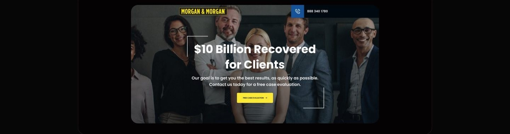
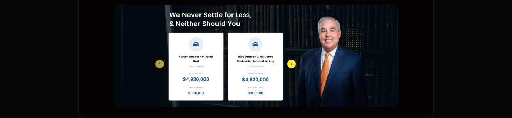
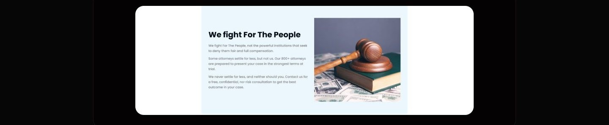
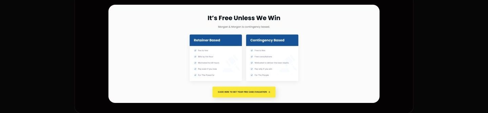
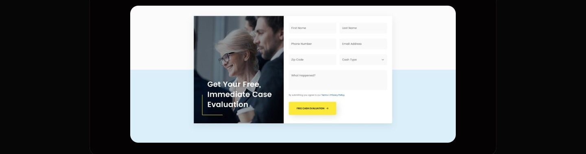

Case study 06 of 11 · Marketing site · Independent concept project
Morgan & Morgan
A clearer path to legal help for people who fear the cost of asking.
2 min read

Earning trust from stressed, first-time visitors fast enough that they act before hesitation about cost and outcome wins.
How every section answers one objection in sequence: can I trust them, can they win, what will it cost, what do I do now.
The biggest barrier to legal help is asking
People with a real case often never contact a firm, because cost feels unknowable, outcomes feel uncertain, and the process feels built for lawyers, not for them. Accident victims land on a law firm's homepage in a stressful moment, and most firms answer with dense navigation, vague credentials, and no clear first step. The homepage had to convert hesitation into a single low-risk action: a free case evaluation.
- Upfront cost fears stop people from finding out whether their case is even viable.
- Firms rarely show real results, so visitors have no way to judge credibility.
- Confusing structure and jargon leave people unsure where the process starts.
A competitor pass across firms like Cellino & Barnes, Jacoby & Meyers, The Barnes Firm, and Law Tigers showed strong brands undercut by dated design, crowded layouts, and buried consultation paths.
One page, four objections, one action
The homepage is sequenced as an argument: establish credibility, prove results, remove the cost objection, then make the ask trivially easy.





What testing could and could not tell me
Moderated sessions with first-time visitors showed the page communicates credibility and a clear next step, but a concept test cannot prove real claimants under real stress would convert.
As a concept project, testing was moderated task walkthroughs, not longitudinal use.
Appendix: foundations and system
The system underneath the page: a trust-first palette, a heavy Poppins type scale, and a button set built around one unmistakable yellow action.